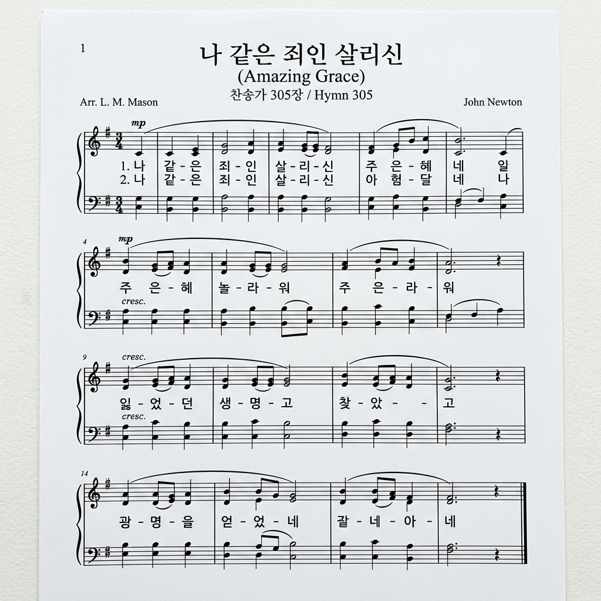

1. 만복의 근원 하나님 온 백성 찬양 드리고
저 천사여 찬송하세 성부 성자 성령 아멘
다 함께 기쁜 마음으로 주님을 찬양합니다.
우리의 영혼이 주를 앙망하며
새 노래로 그 이름을 높여 드립니다.
생명의 말씀이 우리 가운데 풍성하며
은혜의 강물이 우리 영혼에 넘쳐납니다.
할렐루야, 전능하신 주 하나님이 통치하시네.
영광과 존귀와 찬양을 영원히 받으소서.